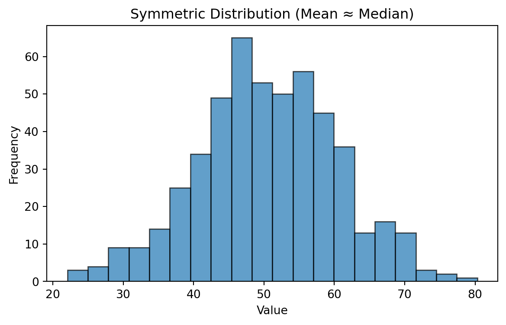
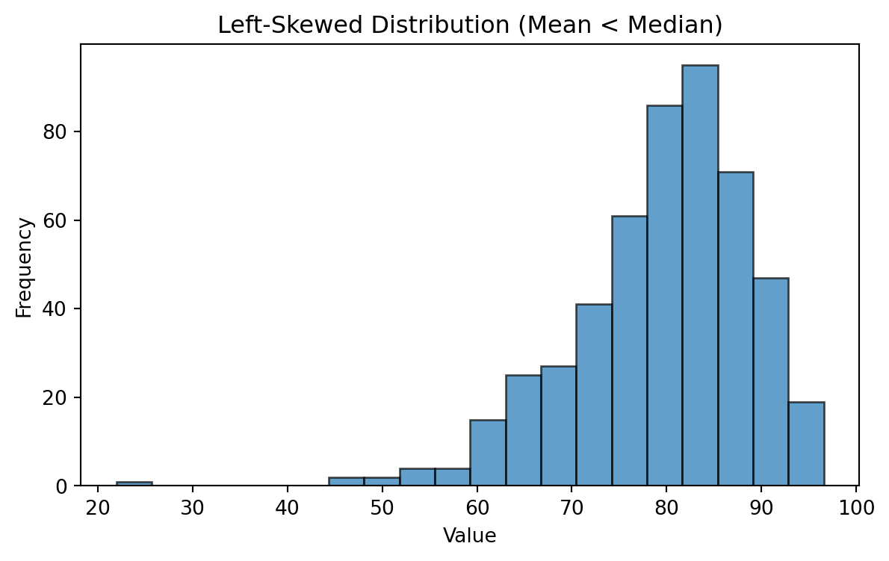
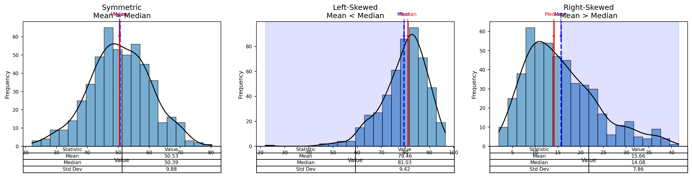
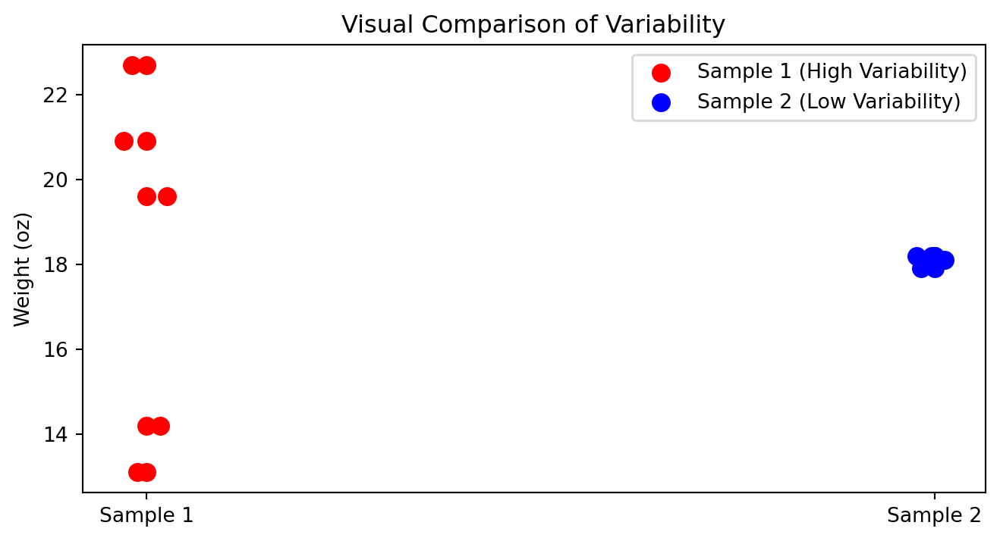
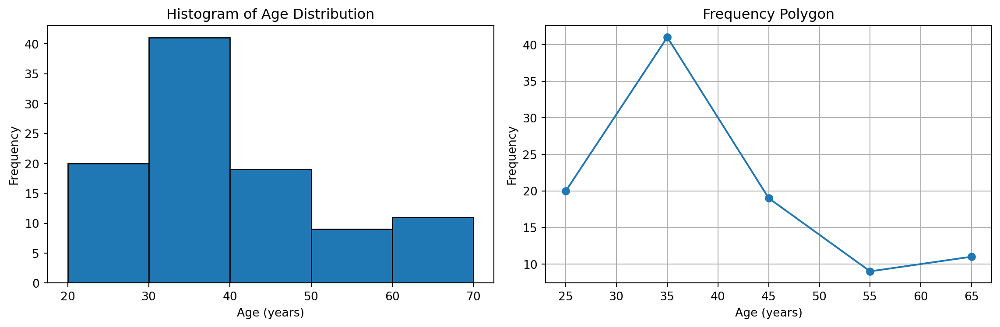
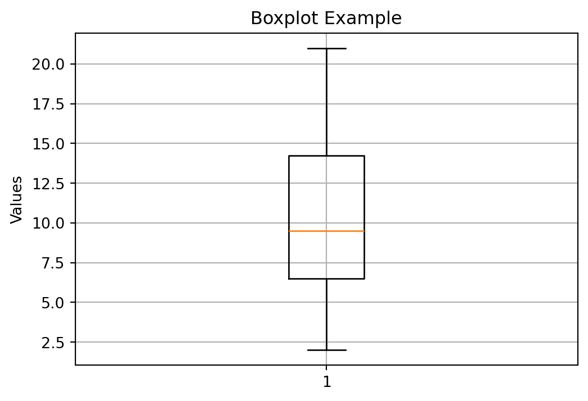
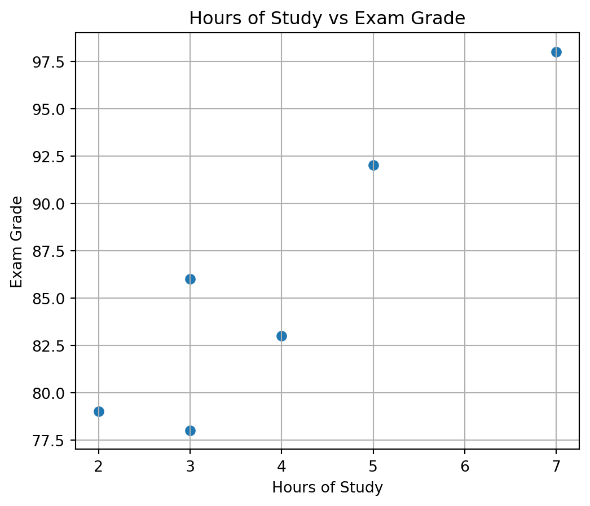

%%{init: {"theme": "default", "logLevel": "fatal"}}%%
graph TD
A["Data Types"] --> B["Qualitative (Categorical)"]
A --> C["Quantitative (Numerical)"]
A --> H["Other Types"]
B --> D["Nominal"]
B --> E["Ordinal"]
C --> F["Discrete"]
C --> G["Continuous"]
H --> I["Binary"]
H --> J["Time-Series"]
H --> K["Textual"]
H --> L["Spatial"]
Statistics Session 02: Data Types
Data Types, Central Tendancy
statistics
Agenda
- Types of Data
- Central Tendancy measurs
- Intro to visualization
What is Statistics?
Statistics is the branch of mathematics that transforms numbers (data) into useful information fohr decision makers.
Why learn Statistics?
- statistics helps you make better sense of the world.
- statistics helps you make better business decisions.
The statistical methods you use for these tasks come from one of the two branches of statistics: descriptive statistics and inferential statistics.
Basic Vocabulary of Statistics
- Variable: A variable is a characteristic of an item or individual.
- Data: Data are the different values associated with a variable.
- Population: A population consists of all the items or individuals about which you want to reach conclusions.
- Sample: A sample is the portion of a population selected for analysis.
- Parameter: A parameter is a measure that describes a characteristic of a population.
- Statistic: A statistic is a measure that describes a characteristic of a sample.
Types of Data
Understanding the types of data is the foundation of every analysis or visualization.
Different data types require different summary statistics, charts, and interpretations.
Why Data Types Matter?
Before calculating averages or plotting charts, it’s essential to recognize what kind of data you’re working with.
The classification of a variable determines:
- Which summary statistics are meaningful
- Which visualizations can be used
- How relationships between variables should be interpreted
Qualitative (Categorical) Data
Qualitative data describe qualities, categories, or labels rather than numbers.
| Subtype | Definition | Examples |
|---|---|---|
| Nominal | Categories with no natural order | Gender (Male/Female), City (Paris, Yerevan, Tokyo) |
| Ordinal | Categories with a meaningful order, but unequal spacing | Education Level (High < Bachelor < Master < PhD), Satisfaction (Low–Medium–High) |
Remember:
Nominal → just names
Ordinal → names with rank
Quantitative (Numerical) Data
Quantitative data represent measurable quantities that can be used in arithmetic operations.
| Subtype | Definition | Examples |
|---|---|---|
| Discrete | Countable numbers, often integers | Number of customers, Complaints per day |
| Continuous | Measured values within a range | Temperature, Age, Revenue, Weight |
Interval Data
Interval values represent ordered units that have the same difference.
A variable is considered interval data when it contains numeric values that are ordered and where the exact differences between values are known.
Example (Temperature in Celsius):
[-15, -10, -5, 0, 5, 10, 15, 20, 25, 30]
A key limitation of interval data is that it does not have a true zero.
In the Celsius example, there is no such thing as “no temperature.”
Ratio Data
Ratio values are also ordered units that have the same difference, similar to interval values.
The key distinction is that ratio data has an absolute zero.
Examples: Income, Weight, Length, etc.
Tip:
Discrete → counting
Continuous → measuring
Additional Data Types (Common in Analytics)
| Type | Definition | Example Applications |
|---|---|---|
| Binary | Two possible outcomes (Yes/No, 0/1) | Subscription status, churn indicator |
| Time-Series | Observations recorded sequentially over time | Daily sales, hourly temperature |
| Textual / Unstructured | Words, sentences, or documents | Customer reviews, tweets |
| Spatial / Geographical | Location-based information | Store coordinates, delivery zones |
Measures of Central Tendency
Once we understand our data types, the next step is to summarize them with simple, representative numbers.
These are called measures of central tendency, and they tell us where the “center” of our data lies.
The three most common measures are:
- Mean or Average — the average value
- Median — the middle value
- Mode — the most frequent value
Mean
The mean is the sum of all values divided by the number of observations.
\[ \text{Mean} = \frac{\sum_{i=1}^{n} x_i}{n} \]
| Example | Calculation |
|---|---|
| Data: 5, 7, 8, 10 | Mean = (5 + 7 + 8 + 10) / 4 = 7.5 |
Mean for Sample
\[ \bar{x} = \frac{\sum_{i=1}^{n} x_i}{n} \]
Population Mean
(same, only notation is different)
\[ \mu = \frac{\sum_{i=1}^{N} x_i}{N} \]
Weighted Mean
| Type | Score | Weight (%) |
|---|---|---|
| Exam | 94 | 50 |
| Project | 92 | 35 |
| Homework | 100 | 15 |
(Weights do not need to add up to one!)
\[ \bar{x} = \frac{\displaystyle \sum_{i=1}^{n} (w_i x_i)} {\displaystyle \sum_{i=1}^{n} w_i} \]
Sample Mean Example
When to Use:
- Conveinent measurement clear to everybody - Works well with continuous or discrete numerical data.
- Sensitive to outliers (extreme values can distort the result).
Given the 5 observations:
\[ \bar{x} = \frac{\sum_{i=1}^{5} x_i}{5} = \frac{14.2 + 19.6 + 22.7 + 13.1 + 20.9}{5} = \frac{90.5}{5} = 18.1 \ \]
\[ \mu = \frac{\sum_{i=1}^{5} x_i}{5} = \frac{300 + 320 + 270 + 210 + 8{,}000}{5} = \frac{9{,}100}{5} = 1{,}820 \]
Median
The median is the value that separates the dataset into two equal halves.
Steps to calculate:
- Order the data from smallest to largest.
- If the number of observations is odd → middle value.
- If even → average of the two middle values.
| Example | Calculation |
|---|---|
| Data: 2, 5, 7, 9, 12 | Median = 7 |
| Data: 3, 5, 8, 10 | Median = (5 + 8)/2 = 6.5 |
When to Use:
- Better than the mean for skewed data or when outliers are present.
- Common for income, property prices, etc.
Mode
The mode is the value that appears most often.
| Example | Calculation |
|---|---|
| Data: 2, 3, 3, 4, 5, 5, 5, 7 | Mode = 5 |
When to Use:
- Ideal for categorical or discrete data.
- A dataset can have: - One mode → unimodal
- Two modes → bimodal
- More than two → multimodal
Comparison of Mean, Median, and Mode
| Measure | Best For | Sensitive to Outliers? | Data Type | Example Context |
|---|---|---|---|---|
| Mean | Symmetrical distributions | Yes | Continuous, Discrete | Average income |
| Median | Skewed distributions | No | Continuous | Typical housing price |
| Mode | Categorical / Repeated values | No | Nominal, Ordinal | Most common product category |
Visual Insight:
In a perfectly symmetrical distribution → Mean = Median = Mode
In a right-skewed distribution → Mean > Median > Mode
In a left-skewed distribution → Mean < Median < Mode
Frequency Distributions
Symmetric Distribution
Mean ~ Median

Left Skewed Distributions

Right Skewed Distributions

Symmetric, Left-Skewed, and Right-Skewed Distributions

Enriched Plot

Measures of Variability
Measures of Variability
- Range
- Variance
- Standard Deviation (SD)
Range
\[ \text{Range = Highest Value - Lowest Value} \]
- Think about where is it applicable?
- Are there any limitations
Variance
Sample Variance:
\[ s^{2} = \frac{\sum_{i=1}^{n} (x_i - \bar{x})^{2}}{n - 1} \]
Population Variance
\[ \sigma^{2} = \frac{ \displaystyle \sum_{i=1}^{N} (x_i - \mu)^{2} }{ N } \]
Standard Deviation
Sample Standard Deviation (Standard Error)
\[ s \;=\; \sqrt{s^{2}} \;=\; \sqrt{ \frac{ \displaystyle \sum_{i=1}^{n} (x_i - \bar{x})^{2} }{ n - 1 } } \]
Population standard deviation
\[ \sigma = \sqrt{ \frac{ \displaystyle \sum_{i=1}^{N} (x_i - \mu)^{2} }{ N } } \]
How to compare variability?
In which cases you can compare standard deviations?
| Box | Sample 1 | Sample 2 |
|---|---|---|
| Box 1 | 14.2 | 18.2 |
| Box 2 | 19.6 | 17.9 |
| Box 3 | 22.7 | 18.1 |
| Box 4 | 13.1 | 18.1 |
| Box 5 | 20.9 | 18.2 |
| Mean | 18.1 | 18.1 |
| Standard deviation | 4.23 | 0.12 |
Visual Comparison of Variability

When variability is bad?
- When consistency and quality control are important
- Product weights, drug dosages, machine precision
- Delivery times, service response times
- Financial risk (greater uncertainty)
When variability is good?
- Biological diversity and adaptability
- Marketing segmentation & A/B testing
- Creativity and innovation
- Investments seeking higher upside
- Identifying top performers (sports, hiring)
When variability is neutral?
- Natural randomness (weather, height, sampling variation)
Variability is not inherently good or bad—its value depends on what you are trying to achieve.
Why \(N-1\)?
A degree of freedom (df) is an independent piece of information that can vary freely.
Whenever we estimate a parameter from the sample, we introduce a constraint.
Each constraint removes one degree of freedom.
The universal rule is:
\[ df = n - \text{(number of estimated parameters)}. \]
During the mean estimation, since we have one constraint we remove only 1 hence
\[ df = n - 1 \]
Coefficient of Variation (Normalization)
The coefficient of variation (CV) is a measure of relative variability.
It allows us to compare the variability of two datasets even when their units or scales differ.
Data
| Date | Nike | |
|---|---|---|
| September 14, 2012 | 48.32 | 709.68 |
| October 15, 2012 | 47.81 | 740.98 |
| November 15, 2012 | 45.42 | 647.26 |
| December 14, 2012 | 48.46 | 701.96 |
| January 15, 2013 | 53.64 | 724.93 |
| February 15, 2013 | 54.95 | 792.89 |
| Mean | 49.77 | 719.62 |
| Standard deviation | 3.70 | 47.96 |
Formula for the Coefficient of Variation
\[ \text{CV} = \frac{s}{\bar{x}} \times 100 \]
Where:
- \(s\) = standard deviation
- \(\bar{x}\) = mean
- CV is expressed as a percentage
Nike
\[ \text{CV}_{\text{Nike}} = \frac{3.70}{49.77} \times 100 \approx 7.4\% \]
\[ \text{CV}_{\text{Google}} = \frac{47.96}{719.62} \times 100 \approx 6.7\% \]
Although Google’s stock prices vary by a much larger dollar amount, its relative variability is smaller.
- Nike CV = 7.4%
- Google CV = 6.7%
This means that, compared to its average price, Google’s stock price is more stable than Nike’s.
The CV helps us compare variability across different scales and units—something raw standard deviations alone cannot do.
Z-score
Number of standard deviations that particular value is farther from the mean of its population or sample:
Population:
\[ z = \frac{x - \mu}{\sigma} \]
Sample:
\[ z = \frac{x - \bar{x}}{s} \]
=STANDARDIZE(x, mean, standard_deviation)Suppose we have:
x = 540mean = 776.3standard deviation = 385.1
If a data point has a z-score of 0, that means it lies exactly at the mean. If a data point has a positive score (z-score > 0), that means it lies above the mean. If a data point has negative score (z-score<0), that means it lies below the mean.
Rule of Thumb for identifying outliers: Data values that have z-scores above +3 and below -3 can be categorized as outliers.
Empirical Rule
For a normally distributed variable with mean \(\mu\) and standard deviation \(\sigma\), the empirical rule states:
- Within 1 standard deviation \((\mu \pm 1\sigma)\): about \(68\%\) of the data
- Within 2 standard deviations \((\mu \pm 2\sigma)\): about \(95\%\) of the data
- Within 3 standard deviations \(\mu \pm 3\sigma\): about \(99.7\%\) of the data

Examples
Daily Steps on Fitness Trackers
Daily step counts for a person over several months often form a normal-like distribution.
Assuming:
- Average steps per day: \(\mu = 8{,}000\)
- Standard deviation: \(\sigma = 1{,}500\)
Then:
- 68% of days fall within: \([6500,\ 9500]\)
- 95% of days fall within: \([5000,\ 11000]\)
- 99.7% of days fall within: \([3500,\ 12500]\)
Fitness coaches use this rule to identify unusually inactive or exceptionally active days.
SAT / GRE / University Exam Scores
Large standardized tests tend to be approximately normal.
Suppose:
- Mean SAT Math score: \(\mu = 520\)
- Standard deviation: \(\sigma = 100\)
Then:
- 68% score between: \(520 \pm 100 = [420,\ 620]\)
- 95% score between: \(520 \pm 200 = [320,\ 720]\)
- 99.7% score between: \(520 \pm 300 = [220,\ 820]\)
Admissions departments use this distribution to benchmark typical, strong, or exceptional performance.
Summarized Examples
| Scenario | Mean (\(\mu\)) | Std (\(\sigma\)) | 68% Range | 95% Range | 99.7% Range |
|---|---|---|---|---|---|
| Body Temperature (°C) | 37°C | 0.3°C | 36.7–37.3°C | 36.4–37.6°C | 36.1–37.9°C |
| SAT Math Score | 520 | 100 | 420–620 | 320–720 | 220–820 |
| Steps per Day | 8000 | 1500 | 6500–9500 | 5000–11000 | 3500–12500 |
| Rod Length (mm) | 100 | 2 | 98–102 | 96–104 | 94–106 |
| Reaction Time (sec) | 0.25 | 0.04 | 0.21–0.29 | 0.17–0.33 | 0.13–0.37 |
Chebyshev’s Theorem
Chebyshev’s Theorem applies to any distribution, not only symmetric or bell-shaped ones.
It states that for any value of \((z > 1)\), at least the following percentage of observations lie within
( z ) standard deviations of the mean:
\[ \left( 1 - \frac{1}{z^2} \right) \times 100 \]
| Z-Score Band | Chebyshev Minimum | Interpretation |
|---|---|---|
| \(|Z| < 1.5\) | \(1 - \frac{1}{2.25} = 0.556 \rightarrow 55.6\%\) | At least \(55.6\%\) of data have z-scores between –1.5 and +1.5 |
| \(|Z| < 2\) | \(1 - \frac{1}{4} = 0.75 \rightarrow 75\%\) | At least \(75\%\) fall within –2 ≤ Z ≤ +2 |
| \(|Z| < 3\) | \(1 - \frac{1}{9} = 0.889 \rightarrow 88.9\%\) | At least \(88.9\%\) fall within –3 ≤ Z ≤ +3 |
| \(|Z| < 4\) | \(1 - \frac{1}{16} = 0.9375\rightarrow 93.75\%\) | At least \(93.75\%\) fall within –4 ≤ Z ≤ +4 |
Suppose monthly customer spending is highly skewed, with a few customers making extremely large purchases.
Because the distribution is not normal, we cannot rely on the empirical rule — but Chebyshev’s theorem still applies when using z-scores.
We measure:
- Mean spending: \(\mu = 120\) USD
- Standard deviation: \(\sigma = 90\) USD
We want to know what proportion of customers have z-scores between –2 and +2, i.e., fall within two standard deviations of the mean.
Using Chebyshev:
\[ P(|Z| < 2) \ge 1 - \frac{1}{4} = 0.75 \]
So at least 75% of customers must have z-scores:
\[ -2 \le Z \le 2 \]
This corresponds to spending between:
\[ x = \mu \pm 2\sigma = 120 \pm 180 \]
Thus:
- Lower bound: 120 - 180 = -60 (interpreted as 0 in real life)
- Upper bound: 120 + 180 = 300
Meaning:
At least 75% of all customers must spend between 0 and 300 USD,
even though the distribution is highly skewed and unpredictable.
This is the power of expressing Chebyshev in z-score terms:
Chebyshev vs Empirical Rule
| Goal | Normal Data | Any Data |
|---|---|---|
| Want precise percentages (68–95–99.7)? | Use z-scores + Empirical Rule | Not valid |
| Want a minimum guarantee? | Optional | Use z-scores + Chebyshev |
| Data is skewed or irregular? | Not valid | Chebyshev works |
| Distribution unknown? | Not valid | Chebyshev works |
Grouped Data
Below table represents a grouped frequency distribution of respondents by age category. Each row corresponds to an age interval, and the second column shows the frequency (fᵢ), meaning the number of people who fall within that interval. The total frequency is 100, indicating the entire sample size.
| Age Group | Number of Respondents (fᵢ) |
|---|---|
| 20 to under 30 | 20 |
| 30 to under 40 | 41 |
| 40 to under 50 | 19 |
| 50 to under 60 | 9 |
| 60 to under 70 | 11 |
| Total | 100 |
Mean of the Grouped Data
\[ \bar{x} \approx \frac{ \sum_{i=1}^{k} (f_i m_i) }{ n } \]
- \(f_i\) = the frequency for class \(i\)
- \(m_i\) = the midpoint for class \(i\)
- \(n = \sum_{i=1}^{k} f_i\) (the total number of observations)
- \(k\) = number of classes
Step 1: Midpoints
\(\frac{20+30}{2}=25\)
| Age Group | Class Midpoint (mᵢ) | Frequency (fᵢ) |
|---|---|---|
| 20 to under 30 | 25 | 20 |
| 30 to under 40 | 35 | 41 |
| 40 to under 50 | 45 | 19 |
| 50 to under 60 | 55 | 9 |
| 60 to under 70 | 65 | 11 |
| Total | 100 |
Step 2: Cumulative
| Age Group | Frequency (fᵢ) | Cumulative Frequency (Fᵢ) |
|---|---|---|
| 20 to under 30 | 20 | 20 |
| 30 to under 40 | 41 | 61 |
| 40 to under 50 | 19 | 80 |
| 50 to under 60 | 9 | 89 |
| 60 to under 70 | 11 | 100 |
| Total | 100 | 100 |
Step 3: Relative Frequency Table
| Age Group | Frequency (fᵢ) | Relative Frequency (fᵢ / 100) |
|---|---|---|
| 20 to under 30 | 20 | 0.20 |
| 30 to under 40 | 41 | 0.41 |
| 40 to under 50 | 19 | 0.19 |
| 50 to under 60 | 9 | 0.09 |
| 60 to under 70 | 11 | 0.11 |
| Total | 100 | 1.00 |
Step 4: Percentage Frequencies Table
| Age Group | Frequency (fᵢ) | Percentage (%) |
|---|---|---|
| 20 to under 30 | 20 | 20 |
| 30 to under 40 | 41 | 41 |
| 40 to under 50 | 19 | 19 |
| 50 to under 60 | 9 | 9 |
| 60 to under 70 | 11 | 11 |
| Total | 100 | 100 |
Step 5: Visualization

Grouped SD
\[ s^2 \approx \frac{\sum_{i=1}^k f_i (m_i - \bar{x})^2}{n - 1} \]
| Age Group | Class Midpoint \(m_i\) | Frequency \(f_i\) | \(\bar{x}\) | \(m_i - \bar{x}\) | \((m_i - \bar{x})^2\) | \((m_i - \bar{x})^2 f_i\) |
|---|---|---|---|---|---|---|
| 20–30 | 25 | 20 | 40 | -15 | 225 | 4,500 |
| 30–40 | 35 | 41 | 40 | -5 | 25 | 1,025 |
| 40–50 | 45 | 19 | 40 | 5 | 25 | 475 |
| 50–60 | 55 | 9 | 40 | 15 | 225 | 2,025 |
| 60–70 | 65 | 11 | 40 | 25 | 625 | 6,875 |
| Total | 100 | 14,900 |
Relative Positions | Percentile
Percentiles help us describe where a particular value lies within the distribution of a dataset.
- Percentile: an approximate measure of the percentage of values in the dataset that fall below a given value.
- The \(p\)-th percentile is the value such that at least \(p\) percent of the observations lie below it.
- Do not confuse percentages and percentiles — they describe different concepts.
- The median is the 50th percentile, because half of the values lie below it.
\[ i = \frac{p}{100}(n) \]
Where:
- \(p\) = the desired percentile
- \(n\) = the total number of observations
- \(i\) = the index (position) of the percentile in the ordered dataset
Interpreting the Index \(i\)
- If \(i\) is not a whole number, round \(i\) up to the next whole number: The value at that position is the percentile.
- If \(i\) is a whole number, the percentile is the midpoint between the value at position \(i\) and the value at position \(i + 1\).
In this example, we will calculate several percentiles using the index formula:
\[ i = \frac{p}{100}(n) \]
Percentile Rank
| Name | Score | Name | Score |
|---|---|---|---|
| Lori | 726 | Marc | 690 |
| Chris | 643 | Kendra | 747 |
| John | 777 | Peter | 618 |
| Sam | 695 | Jordan | 701 |
| Katie | 796 | Teresa | 660 |
| Carole | 743 | David | 716 |
| Irina | 642 | Gia | 742 |
| Lisa | 819 | Ryan | 682 |
\[ \text{Percentile Rank} = \frac{\text{Number of values below x}+0.5}{\text{Total nuber of values}}100 \]
There are 14 scores below John.
\[\frac{14 + 0.5}{16} \times 100 = 90.625\]
Thus, John is in approximately the 91st percentile. This means he scored better than about 91% of all individuals in the dataset.
–
Suppose we have the following ordered dataset of \(n = 12\) values:
2, 4, 5, 7, 8, 9, 10, 12, 14, 15, 18, 21
We will try find:
- the 25th percentile (\(P_{25}\))
- the 50th percentile (\(P_{50}\), the median)
- the 75th percentile (\(P_{75}\))
Finding the 25th Percentile (\(P_{25}\))
Step 1: Compute the index
\[ i = \frac{25}{100}(12) = 3 \]
Step 2: Since \(i = 3\) is a whole number, we take the midpoint between the 3rd and 4th values.
- 3rd value = 5
- 4th value = 7
Thus, \[ P_{25} = \frac{5 + 7}{2} = 6 \]
Finding the 50th Percentile (\(P_{50}\)), the Median
Step 1: Compute the index
\[
i = \frac{50}{100}(12) = 6
\]
Step 2: Index is a whole number → midpoint between 6th and 7th values.
- 6th value = 9
- 7th value = 11
Thus, \[ P_{50} = \frac{9 + 11}{2} = 10 \]
Finding the 75th Percentile (\(P_{75}\))
Step 1: Compute the index
\[ i = \frac{75}{100}(12) = 9 \]
Step 2: Whole number → midpoint between 9th and 10th values.
- 9th value = 14
- 10th value = 18
Thus:
\[ P_{75} = \frac{14 + 18}{2} = 16 \]
Summary
- \(P_{25} = 6\)
- \(P_{50} = 10\)
- \(P_{75} = 16\)
Percentiles locate values relative to the distribution and help us describe how data spreads.
Quartiles
Quartiles divide the data into four equal parts. They are special percentiles:
- 1st quartile (\(Q_1\)) = 25th percentile
- 2nd quartile (\(Q_2\)) = 50th percentile (median)
- 3rd quartile (\(Q_3\)) = 75th percentile
The Interquartile Range (IQR) measures the spread of the middle 50% of the data:
\[ \text{IQR} = Q_3 - Q_1 \]
Boxplot Example

Example Dataset
Consider the following ordered dataset with 12 data points:
2, 4, 5, 7, 8, 9, 10, 12, 14, 15, 18, 21
Step 1: Find the Median (\(Q_2\))
Because \(n = 12\) is even:
- 6th value = 9
- 7th value = 10
\[ Q_2 = \frac{9 + 10}{2} = 9.5 \]
Step 2: Find \(Q_1\) (25th percentile)
\(Q_1\) is the median of the lower half:
Lower half: 2, 4, 5, 7, 8, 9
Median of lower half:
- 3rd value = 5
- 4th value = 7
\[ Q_1 = \frac{5 + 7}{2} = 6 \]
Step 3: Find \(Q_3\) (75th percentile)
\(Q_3\) is the median of the upper half:
Upper half: 10, 12, 14, 15, 18, 21
Median of upper half:
- 3rd value = 14
- 4th value = 15
\[ Q_3 = \frac{14 + 15}{2} = 14.5 \]
Step 4: Compute the IQR
\[ \text{IQR} = Q_3 - Q_1 = 14.5 - 6 = 8.5 \]
Summary of Quartiles
| Quartile | Value |
|---|---|
| \(Q_1\) | 6 |
| \(Q_2\) | 9.5 |
| \(Q_3\) | 14.5 |
| IQR | 8.5 |
Assingment in Percentiles
We are given the populations (in millions) of 12 U.S. cities.
We will:
- Calculate the 60th percentile of the population data
- Find the percentile rank of the population of Dallas (1.20 million)
Data Table
| City | Population (millions) |
|---|---|
| New York, NY | 8.18 |
| Los Angeles, CA | 3.79 |
| Chicago, IL | 2.70 |
| Houston, TX | 2.10 |
| Philadelphia, PA | 1.53 |
| Phoenix, AZ | 1.45 |
| San Antonio, TX | 1.33 |
| San Diego, CA | 1.31 |
| Dallas, TX | 1.20 |
| San Jose, CA | 0.95 |
| Jacksonville, FL | 0.82 |
| Indianapolis, IN | 0.82 |
Measures of Association
Measures of Association
The table below shows the number of hours each student studied and their corresponding exam grade.
Data Table
| Student | Hours of Study | Exam Grade |
|---|---|---|
| 1 | 3 | 86 |
| 2 | 7 | 98 |
| 3 | 5 | 92 |
| 4 | 4 | 83 |
| 5 | 3 | 78 |
| 6 | 2 | 79 |
Scatter Plot (Hours of Study vs Exam Grade)

Covariance
- Covariance describes the direction of the linear relationship between two variables.
- A positive covariance means the variables tend to increase together.
- A negative covariance means one variable increases as the other decreases.
- The magnitude of covariance does not indicate the strength of association.
- Therefore, covariance is useful for describing direction, but not strength.
\[ s_{xy} = \frac{ \sum_{i=1}^{n} (x_i - \bar{x})(y_i - \bar{y}) }{ n - 1 } \]
Where:
- \(x_i\), \(y_i\) are paired observations
- \(\bar{x}\) = mean of the \(x\) values
- \(\bar{y}\) = mean of the \(y\) values
- \(n\) = sample size
Covariance uses the product of deviations to identify whether
\(x\) and \(y\) move in the same direction (positive) or opposite directions (negative).
Correlation
Correlation standardizes covariance so that it always falls between –1.0 and +1.0. It tells us both the direction and strength of a linear relationship between two variables.
\[ r_{xy} = \frac{s_{xy}}{s_x s_y} \]
Example:
\[ r_{xy} = \frac{12.8}{(1.79)(7.77)} = 0.920 \]
- The values of \(r_{xy}\) range from –1.0 to +1.0.
- When \(r_{xy}\) is positive, the linear relationship between \(x\) and \(y\) is positive:
as \(x\) increases, \(y\) tends to increase.
- When \(r_{xy}\) is negative, the linear relationship between \(x\) and \(y\) is negative:
as \(x\) increases, \(y\) tends to decrease.
- When \(r_{xy} = 0\), there is no linear relationship between the variables.
A value of \(r_{xy} = 0.920\) indicates a strong positive linear relationship.
Calculations
Covariance and Correlation: Full Manual Calculations
We use the dataset:
| Student | Hours (\(x_i\)) | Grade (\(y_i\)) |
|---|---|---|
| 1 | 3 | 86 |
| 2 | 7 | 98 |
| 3 | 5 | 92 |
| 4 | 4 | 83 |
| 5 | 3 | 78 |
| 6 | 2 | 79 |
Number of observations:
\[ n = 6 \]
Step 1: Compute the Means
Hours:
\[ \bar{x} = \frac{3 + 7 + 5 + 4 + 3 + 2}{6} = \frac{24}{6} = 4 \]
Grades:
\[ \bar{y} = \frac{86 + 98 + 92 + 83 + 78 + 79}{6} = \frac{516}{6} = 86 \]
Step 2: Covariance Table
| \(x_i\) | \(y_i\) | \(x_i - \bar{x}\) | \(y_i - \bar{y}\) | \((x_i - \bar{x})(y_i - \bar{y})\) |
|---|---|---|---|---|
| 3 | 86 | -1 | 0 | 0 |
| 7 | 98 | 3 | 12 | 36 |
| 5 | 92 | 1 | 6 | 6 |
| 4 | 83 | 0 | -3 | 0 |
| 3 | 78 | -1 | -8 | 8 |
| 2 | 79 | -2 | -7 | 14 |
| Sum | 64 |
Step 3: Sample Covariance
Formula:
\[ s_{xy} = \frac{\sum (x_i - \bar{x})(y_i - \bar{y})}{n - 1} \]
Plug in values:
\[ s_{xy} = \frac{64}{6 - 1} = \frac{64}{5} = 12.8 \]
Step 4: Compute Standard Deviations
Hours (\(x\)):
| \(x_i\) | \(x_i - \bar{x}\) | \((x_i - \bar{x})^2\) |
|---|---|---|
| 3 | -1 | 1 |
| 7 | 3 | 9 |
| 5 | 1 | 1 |
| 4 | 0 | 0 |
| 3 | -1 | 1 |
| 2 | -2 | 4 |
| Sum | 16 |
Variance:
\[ s_x^2 = \frac{16}{5} = 3.2 \]
Std dev:
\[ s_x = \sqrt{3.2} \approx 1.79 \]
Grades (\(y\)):
| \(y_i\) | \(y_i - \bar{y}\) | \((y_i - \bar{y})^2\) |
|---|---|---|
| 86 | 0 | 0 |
| 98 | 12 | 144 |
| 92 | 6 | 36 |
| 83 | -3 | 9 |
| 78 | -8 | 64 |
| 79 | -7 | 49 |
| Sum | 302 |
Variance:
\[
s_y^2 = \frac{302}{5} = 60.4
\]
Std dev:
\[
s_y = \sqrt{60.4} \approx 7.77
\]
Step 5: Correlation
\[ r_{xy} = \frac{s_{xy}}{s_x s_y} \]
Substitute:
\[ r_{xy} = \frac{12.8}{(1.79)(7.77)} = 0.9207 \]
This matches the Python result.
Final Values
Covariance:
\[ s_{xy} = 12.8 \]Correlation:
\[ r_{xy} = 0.9207 \]
Scatter Plot With Values

Correlation VS Causation
High correlation does not imply causation:
- Reverse Causality
- Sample Selection
Usefull materials
- Business Statistics 2 Chapter 3 and Chapter 4
- Here